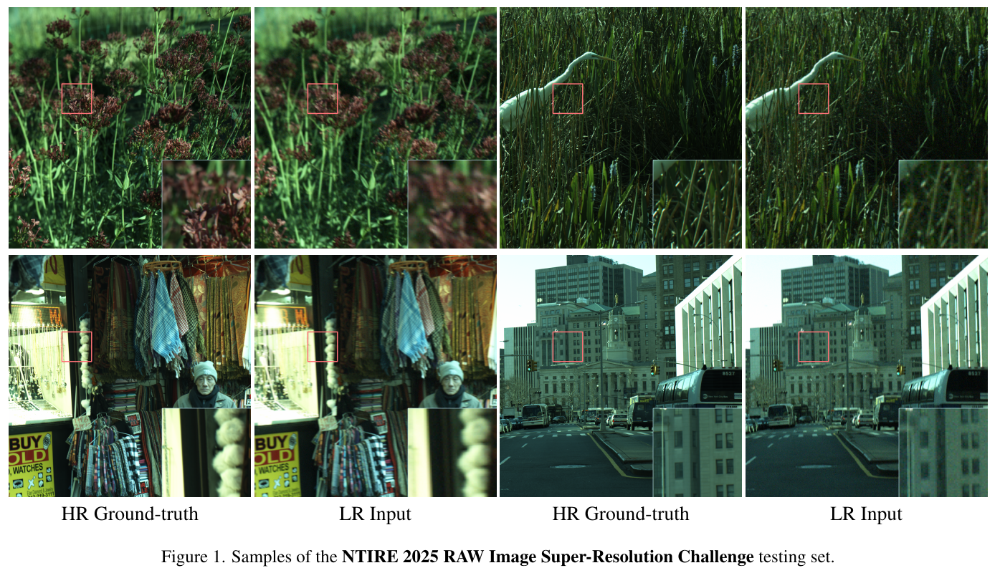
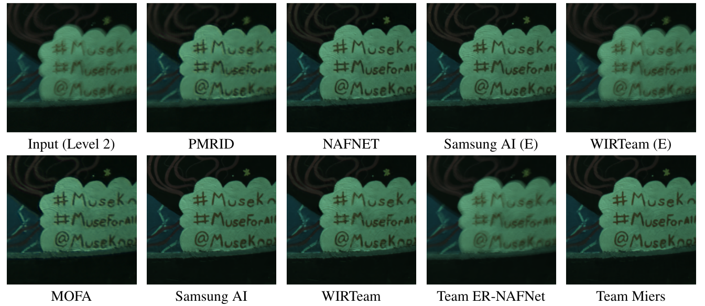
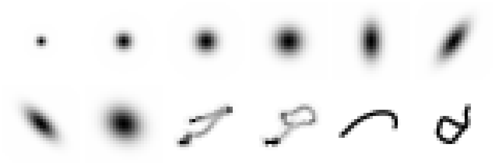
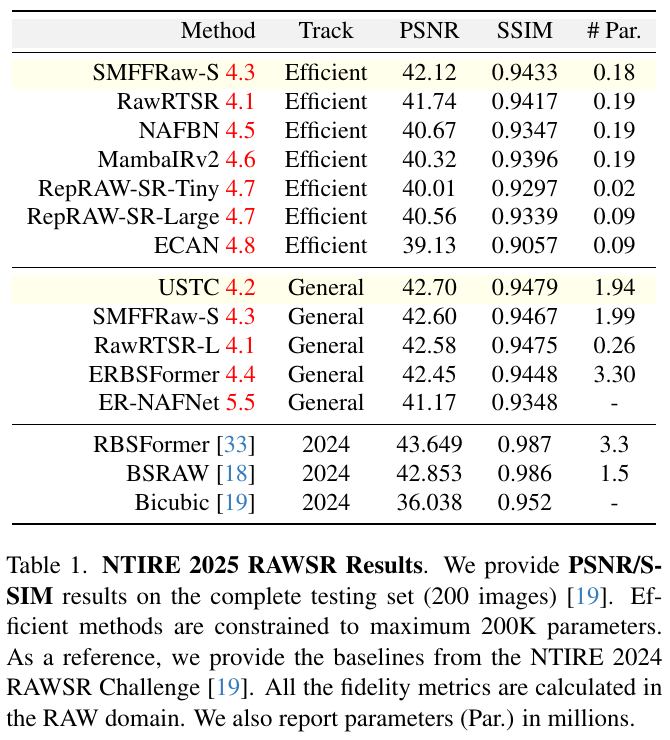
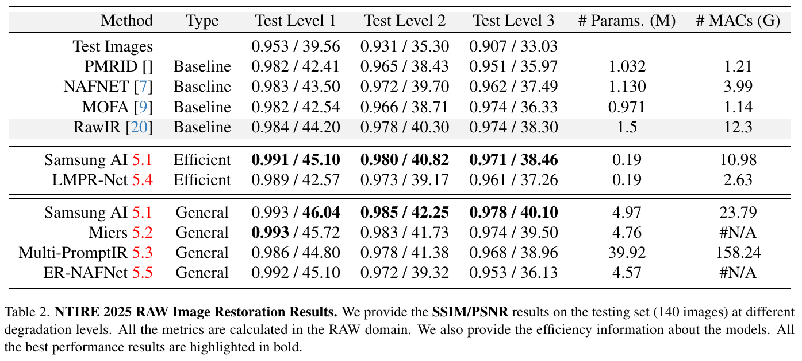
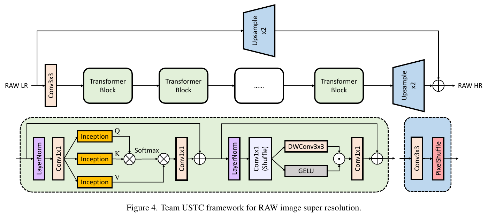
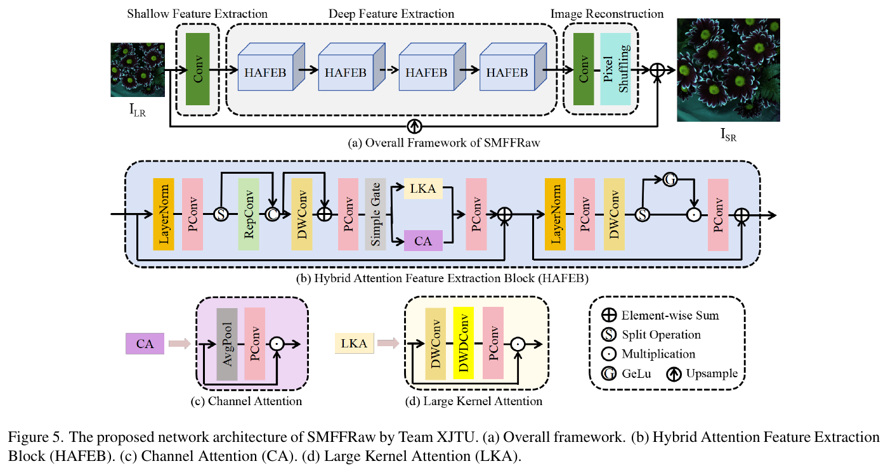
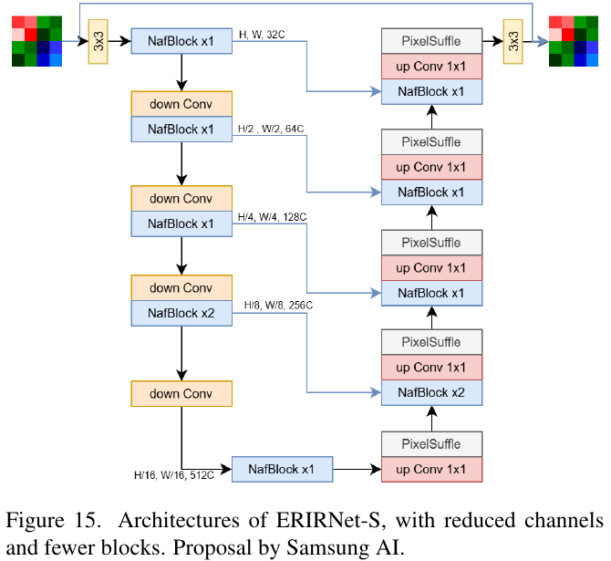

论文
NTIRE 2025 RAW 复原与超分挑战赛报告：BSRAW 随机退化管线、两条赛道的数据与前几名方案，以及这条管线能不能用来造伪 iPhone RAW

代码与数据来源说明：报告首页的代码链接是 mv-lab/AISP，本页
repo-aisp/是它的克隆（HEAD84d4bb4，2025-03-05，提交信息为 "NTIRE 2025 Update. Added RAW Restoration and SR utils and tutorial."）。BSRAW 退化管线就在其中的imresutils/，包括degradations.py、blur.py、noise.py、kernels.npy和一个演示 notebook。仓库里没有 LICENSE 文件，没有本届的评测脚本，也没有生成测试集的代码。参赛队里，超分赛道通用赛道第一 USTC-VIDAR 公开了代码 Luciennnnnnn/LiteRAWFormer（MIT，repo-literawformer/，HEAD9d1c62f，2025-06-09，README 标「Winner Solution」，作者为报告 §4.2 的 Zhang、Luo、Chen、Liu），权重放在 Google Drive。其余各队（SMFFRaw、RawRTSR、ERIRNet、Miers、Multi-PromptIR、LMPR-Net、ER-NAFNet 等）按方法名、队名、作者名在 GitHub 上都没有搜到公开代码，只能按报告文字分析。复原赛道的数据在 Hugging Face marcosv/rawir（MIT 标签，不需要申请）。本页没有下载完整数据，只用 HTTP Range 读取了各个 zip 的目录，并按需取了 4 个单独的块做核对（§2.2、§4）。kernels.npy是 numpy 对象数组，加载需要 pickle；本页没有执行 pickle，而是用pickletools逐个操作码解析，直接取出 12 个 25×25 float32 核的原始字节（§2.3）。CVF 版 PDF 与 arXiv v2 的正文一致；CVF 页面 bibtex 的作者表和 PDF 不同（多出 4 人，ER-NAFNet 队 4 人重复出现），本页以 PDF 为准。
专项定位：本页属于「手机照片 → 相机画质：细节与质感迁移」专项（入口 phone2camera-2026）。专项计划从真实目标相机 RAW 反向合成「伪 iPhone RAW」：先做颜色映射，再依次加 iPhone 的模糊、下采样、马赛克和噪声（调研页 §6 第 (5) 步）。BSRAW 是目前最常用的 RAW 域随机退化管线，raw-degradation-sr-2026 拿它当基线，并证明逐台设备实测的核比它好。本页要回答三个问题：这条管线具体由什么组成，能不能直接拿来造伪 iPhone RAW，挑战赛数据里有没有能用的 iPhone RAW。姊妹报告 ntire25-raw-recon-2025 是同一组织者同一届的 RGB→RAW 赛道，iPhone X 部分的数据与本页复原赛道同源。
任务
两条赛道。超分（RAWSR）：输入打包 RGGB 的 LR RAW，输出 2× 的 HR RAW，退化未知（噪声加模糊）。复原（RAWIR）：输入同尺寸的模糊加噪 RAW，输出干净 RAW。两条赛道都按参数量分高效（≤0.2M）和通用两档（§2.1）。
数据
超分用 FiveK 里 Canon / Nikon 单反的 1064 张 1024×1024×4 图，与 2024 年相同。复原用手机：2139 块 512×512×4，来自 iPhone X、S9、Pixel、Vivo X90 共 292 张原图；测试 140 块，来自 20 张原图（§2.2）。
退化
y = down(x⊗k) + n，全部在打包四通道上做。公开代码：50% 概率从 11 个高斯或运动核里选一个模糊，2×2 平均池化，一半 shot-read、一半逐像素异方差高斯噪声，最后截断到 [0,1]（§2.3）。
评测
RAW 域 PSNR / SSIM。超分测 200 张 1MP 图；复原分三档退化（只加噪 / 30% 概率模糊 / 全部模糊加噪）分别报分。测试真值不公开，评测脚本也没放（§2.4）。
前几名
超分：LiteRAWFormer 42.70（1.94M）、SMFFRaw-L 42.60、RawRTSR-L 42.58（0.26M）；高效赛道 SMFFRaw-S 42.12。复原：三星 ERIRNet 46.04 / 42.25 / 40.10，小米 Miers 45.72 / 41.73 / 39.50。前几名普遍改过退化管线（§2.5–2.7）。
给本专项的结论
管线的顺序和在线合成的写法可以照搬，模糊核、下采样、噪声三个组件都要换成 iPhone 实测，前面还要加颜色映射。复原赛道里有 162 张 iPhone X 干净 RAW（另有 97 张低质量）和机内成片，可以当真实分布参照，但没有 ISO（§6）。
1. 出发点：RAW 上的复原与超分为什么值得单独办一届
报告的动机分三层（报告 §1）。第一层是物理限制：手机传感器小，每个像素收集的光少、信噪比低，光学分辨率也受限，所以「高分辨率、低噪声、足够锐」三者很难兼得，只能靠复原算法补。第二层是数据域：RAW 只做过线性放大和白平衡，和传感器信号近似成正比；ISP 之后的 sRGB 经过了去马赛克、色调映射、gamma、调色这些强非线性操作，信息不可逆地丢了，噪声和量化误差也被放大。所以去噪、超分在 RAW 域做更合适。报告还提到，即使用最好的 sRGB→RAW 重建方法，重建出的 RAW 也恢复不出原始 RAW 的细节纹理。第三层是跨设备：不同厂商的 ISP 调校风格差异很大，同一传感器的 sRGB 之间的差别，比它们的 RAW 之间大得多，在 RAW 上训练的模型更容易跨机型泛化。
这一届是同一组织者 RAW 超分系列的延续：
- BSRAW（Conde、Vasluianu、Timofte，WACV 2024，arXiv:2312.15487）提出了本届使用的退化管线，以及一个 1.5M 参数的基线模型。
- NTIRE 2024 RAWSR（arXiv:2404.16223）是第一届，训练集同样是这 1064 张 FiveK 单反图。
- RawIR（Conde 等，「Toward Efficient Deep Blind Raw Image Restoration」，ICIP 2024，arXiv:2409.18204）是复原赛道的基线，复原数据集在 Hugging Face 上的卡片引用的也是这篇。
报告第 4、5 节的方法描述由各队自己提供（报告 §3.3 末的方框）。所以下文各方案的「消融」和训练细节都是自述，没有统一协议，大多也没有代码可以核对。
打包 RGGB（packed RAW）
Bayer 马赛克每个 2×2 格子里有 R、G、G、B 各一个像素。把它们拆成 4 个半分辨率通道，H×W 的 RAW 就变成 H/2×W/2×4。本届所有数据和退化都在这种四通道格式上。
PSF / 模糊核
点扩散函数，即一个理想光点经过镜头、对焦误差或手抖后在传感器上摊开的样子。合成数据时用一个小卷积核来代表它。
shot / read 噪声
shot 噪声来自光子计数的随机性，方差与信号成正比；read 噪声来自读出电路，与信号无关。合起来就是「方差 = λ_s·x + λ_r」的异方差高斯近似。
退化池
预先准备好的一组模糊核和噪声参数范围。每次造训练样本时随机抽一组施加上去，让模型见过各种退化，这类方法因此被称为「盲」复原。
高效 / 通用赛道
按参数量分档：高效赛道不超过 0.2M（200K）参数，通用赛道原则上不限（但见 §2.4 的不一致）。
Level 1 / 2 / 3
复原赛道测试集的三档退化：只加噪；30% 概率模糊、50% 概率加真实噪声；全部既模糊又加噪。
FiveK（MIT5K）
Adobe 与 MIT 在 2011 年发布的 5000 张照片集，带原始 RAW，主要来自多台 Canon、Nikon 单反。超分赛道的 HR 图取自其中。
重参数化 / 蒸馏
重参数化：训练时用多分支卷积，部署前把它们合并成一个等价的单卷积。蒸馏：用一个大的教师模型的输出去监督小的学生模型。前几名的小模型几乎都用了这两招。
2. 方法：任务、数据、退化、评测，以及排名靠前的方案
2.1 两条赛道的任务定义
| 超分赛道（RAWSR） | 复原赛道（RAWIR） | |
|---|---|---|
| 输入 → 输出 | LR 打包 RAW（如 512×512×4）→ 2× HR 打包 RAW | 退化的打包 RAW（512×512×4）→ 同尺寸干净 RAW |
| 退化 | 「未知的噪声和模糊」加 2× 下采样 | 噪声和模糊，分三档 |
| 训练数据 | 只给 HR 干净图，LR 由参赛者用 BSRAW 管线在线合成，允许扩展 | 只给干净块，同样用 BSRAW 管线合成，鼓励自建更真实的管线 |
| 设备 | FiveK 里的 Canon / Nikon 单反 | iPhone X、Galaxy S9、Google Pixel、Vivo X90（报告还写了 S21） |
| 分档 | 高效 ≤0.2M / 通用 | 高效 ≤0.2M / 通用 |
| 提交入口 | Codalab 21644 | Codalab 21647 |
报告给出的报名与提交数是两条赛道合计：230 人注册，45 人在挑战期内提交了结果（摘要）。
2.2 数据集：来源、组成与公开情况
超分赛道。 数据沿用 BSRAW 和 2024 年那一届（报告 §2.1）。HR 图取自 FiveK，组织者人工筛掉过暗、过曝和模糊的图，只留对焦清晰、低 ISO 的。预处理有两步：按黑电平和位深归一化，然后打包成 RGGB 四通道。训练集 1064 张 1024×1024×4（对应 2048×2048 的马赛克）。测试分三份：验证集 40 张 1024px 图，Test 1MP 200 张，以及同样这 200 张的全分辨率版本（约 12MP）。参赛者只拿到 LR 输入。2024 年的报告写的是同样的 1064 张和同样的测试划分，所以这一届超分赛道的数据与上一届相同。
复原赛道。 报告 §3.1 的描述是：数据来自 Samsung Galaxy S9 和 iPhone X（取自 Afifi & Abuolaim 的 RAW-to-RAW 数据集，arXiv:2106.13883），另外采集了 Google Pixel 10、Vivo X90 和 Samsung S21，用来增加传感器多样性、构建完整的测试集。场景覆盖室内外、日夜。全部人工筛过，只留 ISO ≤ 400、对焦清晰、曝光正常的图。原始文件是 DNG，没有经过手机 ISP。预处理是按黑电平和位深（10/12/14 bit）归一化、转成 RGGB 四通道、切成不重叠的 512×512×4 块，训练集共 2139 块。
我用 HTTP Range 只读取了 marcosv/rawir 上各个 zip 的中央目录，统计结果如下：
| 目录 | 设备 | .npy 块数 |
原图数（按文件名去重） | .pkl 元数据 |
同名 .png（机内成片） |
|---|---|---|---|---|---|
train/iphone-x/ |
iPhone X | 972 | 162 | 265 | 972 |
train/samsung-s9/ |
Galaxy S9 | 474 | 79 | 236 | 474 |
train/googlepx/ |
Google Pixel | 231 | 12 | 12 | 231 |
train/x90/ |
Vivo X90 | 462 | 39 | 39 | 462 |
| 合计（干净训练块） | 2139 | 292 | |||
train/lq-iphone/ |
iPhone X，低质量 | 582 | 97 | 0 | 582 |
train/lq-samsung/ |
Galaxy S9，低质量 | 924 | 154 | 0 | 924 |
test-inp-lvl1/2/3/ |
gp / ip-ss / x90 前缀 |
每档 140（27 / 70 / 43） | 3 / 12 / 5 | — | — |
val-inp/ |
同上 | 140 | 同上 | — | — |
几点观察：
- 2139 正好是四个干净目录之和（972 + 474 + 231 + 462），LQ 目录不算在内。也就是说，报告的「2139 clean patches」可以由公开文件逐一对上。
- iPhone X 部分与 RGB→RAW 赛道同源。
iphonex-samsungs9.zip是 8,731,825,651 字节，ntire25-raw-recon-2025 记录的train_rgb2raw.zip也是 8.73 GB，块数、原图数、LQ 块数（582 / 924）都一致。每个块都附有同名的机内 ISP 输出 PNG（1024×1024×3，8 bit），数据集卡片明确说它是「the phone imaging pipeline (ISP) output」。元数据.pkl是 rawpy 的字段，按姊妹页的解析结果，没有 ISO、曝光时间和焦距。 - 公开文件里找不到 S21。 测试集只有三种前缀：
gp（Google Pixel，3 张原图）、ip-ss（iPhone / Samsung，12 张）、x90（5 张）。数据集卡片写的设备是「iPhoneX, SamsungS9, Samsung21, Google Pixel 7-9, Oppo vivo x90」，但没有任何目录或前缀对应 S21。 - 报告写的「Google Pixel 10」和数据集卡片的「Pixel 7–9」对不上。 Pixel 10 是 2025 年 8 月 20 日发布的（Wikipedia），晚于本届挑战赛（2025 年 2–3 月）和报告 arXiv v2（2025-06-04）。所以报告这里多半是笔误，应以卡片为准。
- 每个
.npy是 2,097,280 字节，即 512×512×4 的uint16加 128 字节头。按卡片说明，存储前已经做过黑白电平校正，统一乘 4095 存成 12 bit。

gp_2_11.npy（Google Pixel）在 Level 2 下的输入和各方案输出，显示方式是双线性去马赛克加 gamma。这张输入的模糊非常重。三星（两档）、NAFNet、MOFA 和 Miers 都把文字恢复得较清楚；ER-NAFNet 和 WIRTeam 高效版的输出仍然明显发糊，与报告「denoising and deblurring might require opposite operations, the models struggle… specially blur」的总结一致。2.3 BSRAW 退化管线：论文怎么写的，代码里实际有什么
论文版本。 BSRAW 沿用经典的超分退化模型（BSRAW 论文 Eq. 1）：
—— 翻译: 低分辨率观测 y = 高分辨率图 x 先和模糊核 k 卷积，再按倍数 s 下采样，最后加上噪声 n。顺序对应物理过程：光先经过镜头（模糊），再落到更粗的像素网格上（下采样），最后读出时引入噪声。
噪声采用 shot-read 模型（BSRAW 论文 Eq. 2）：
—— 翻译: 每个像素的观测值是一个以真值 x 为均值的高斯随机数，方差由两部分组成：与亮度无关的读出噪声 λ_r，以及与亮度成正比的光子噪声 λ_s·x。越亮的地方噪声绝对值越大，但相对于信号越小。
BSRAW 论文 §3 描述的管线比这两个公式丰富得多：噪声参数既有按 Zhang 等方法为自有设备标定的 profile，也有 SIDD（手机）和 DND（单反）的 profile；模糊池包括各向同性和各向异性高斯核、实测的运动模糊核，以及实测的 PSF；另有按 ISO 线性缩放的低曝光退化；顺序是「核 → 下采样 → 受曝光影响的噪声 → 额外的运动模糊和下采样」，「甚至可以施加两个 PSF」；还定义了 I–IV 四个退化等级。
公开代码。 repo-aisp/imresutils/ 里实际提供的管线只有下面这一个函数：
repo-aisp/imresutils/degradations.py:L54-L87 — 公开的 BSRAW 退化入口：50% 概率模糊，可选 2× 下采样，然后在两种噪声里二选一，最后截断到 [0,1]
def simple_deg_simulation(img, kernels, down=False):
"""
Pipeline to add synthetic degradations to a RAW image.
The pipeline is implemented in pytorch so it can be part of your Dataset class, and efficient!
Possible Transformations:
y = down(x * k) + n
y = (x * k) + n
y = (x * k)
y = x + n
"""
p_noise = np.random.rand()
p_blur = np.random.rand()
img = convert_to_tensor(img)
# Apply psf blur: (x * k)
if p_blur > 0.5:
img = apply_psf(img, kernels)
# Apply downsampling down(x*k)
if down:
img = downsample_raw(img)
# Add noise: down(x*k) + n | (x*k) + n | x + n
if p_noise > 0.5:
img = add_natural_noise(img)
else:
img = add_heteroscedastic_gnoise(img)
img = torch.clamp(img, 0. , 1.)
img = img.permute(1,2,0).detach().cpu().numpy()
img = img.astype(np.float32)
return img
它和论文版本相比少了很多东西：没有曝光退化，没有第二个 PSF，没有第二次下采样，没有 SIDD / DND 的噪声 profile。docstring 列出的「y = (x * k)」（只模糊不加噪）在代码里也不会出现，因为 if / else 两个分支都会加噪声，每个样本必然带噪。下面逐个组件看。
(1) 模糊：12 个核，只抽前 11 个，四个通道共用一个。
repo-aisp/imresutils/blur.py:L53-L63 — 从核池里随机取一个 25×25 核，做 8 种翻转 / 旋转之一，同一个核卷积打包 RAW 的全部 4 个通道
def apply_psf(inp_img, kernels):
"""
Apply PSF from a pool. See kernels.npy
"""
idx = np.random.choice(np.arange(11), p=[0.091, 0.091, 0.091, 0.091, 0.091, 0.091, 0.091, 0.091, 0.091, 0.091, 0.09])
kernel = kernels[idx].astype(np.float64)
kernel = augment_kernel(kernel, mode=random.randint(0, 7))
ker_sz = 25
tkernel = torch.from_numpy(kernel.copy()).view(1, ker_sz, ker_sz).type(torch.FloatTensor)
blurry = apply_custom_filter(inp_img.unsqueeze(0), tkernel).squeeze(0)
return torch.clamp(blurry, 0., 1.)
kernels.npy 的头写着 shape: (12,)，演示 notebook 打印出来的也是 (12,)。但 np.random.choice(np.arange(11), …) 只会抽到下标 0–10，第 12 个核永远用不上。apply_custom_filter 是 kornia.filters.filter2d(…, normalized=True)（blur.py:L30-L31），一个 1×25×25 的核会广播到 4 个通道上，所以 R、Gr、Gb、B 用的是同一个核。而且卷积作用在半分辨率的打包网格上，核上的 1 个像素相当于马赛克上的 2 个像素。

repo-aisp/imresutils/kernels.npy 绘制，不在报告中）。12 个 25×25 核，各自按峰值归一化，并做了平方根拉伸以便看清。按二阶矩统计（单位是打包像素）：第一行前 4 个是各向同性高斯，σ = 0.70 / 1.20 / 1.60 / 2.00；第 5 个是轴对齐的各向异性高斯（1.41 × 2.65）；第 6 个和第二行第 1 个是旋转过的各向异性高斯（约 1.22 × 2.9）；第二行第 2 个是较大的近圆形核（2.24 × 2.65）；最后 4 个是运动轨迹，质心偏离中心，最大奇异值能量占比只有 0.35–0.79。右下角那条轨迹就是永远抽不到的第 12 个核。这 12 个核里看不出实测镜头 PSF 的样子，没有旁瓣，没有不规则形状，也没有随视场位置变化。和 raw-degradation-sr-2026 逐通道、逐视场块实测的 SR 核相比，它们既不分颜色，也不包含像素积分。(2) 下采样：打包平面上的 2×2 平均池化。
repo-aisp/imresutils/degradations.py:L9-L25 — 对打包 RAW 的每个通道做 2×2 平均池化；注意最后一行的 permute
def downsample_raw(raw):
"""
Downsamples a 4-channel packed RAW image by a factor of 2.
The input raw should be a [H/2, W/2, 4] tensor -- with respect to its mosaiced version [H,w]
Output is a [H/4, W/4, 4] tensor, preserving the RGGB pattern.
"""
# Ensure the image is in [B, C, H, W] format for PyTorch operations
# raw_image_4channel = raw.permute(2, 0, 1).unsqueeze(0)
# Apply average pooling over a 2x2 window for each channel
downsampled_image = F.avg_pool2d(raw, kernel_size=2, stride=2, padding=0)
# Rearrange back to [H/4, W/4, 4] format
downsampled_image = downsampled_image.squeeze(0).permute(1, 2, 0)
return downsampled_image
这段有两个问题。
第一个是形状错误。convert_to_tensor 已经把输入转成了 [4, H, W]（degradations.py:L39-L44），池化后是 [4, H/2, W/2]。squeeze(0) 什么也不做（第 0 维是 4），permute(1,2,0) 把它变成 [H/2, W/2, 4]。回到 simple_deg_simulation 后，结尾又做了一次 permute(1,2,0)（L85），输出就成了 [W/2, 4, H/2]。我把这几行张量操作原样敲进 PyTorch 2.15 跑了一遍：512×512 的输入，down=True 的输出形状是 (256, 4, 256)，down=False 的才是正确的 (512, 512, 4)。演示 notebook 里设的是 DOWNSAMPLE = False，只在不下采样时断言形状，所以这条超分路径在仓库里没有被跑过。冠军的代码把 permute 删掉了（§2.5）。
第二个更重要，是相位偏移。设 HR 马赛克的像素中心在整数坐标上，通道 c 在 2×2 Bayer 格子里的偏移是 \(o_c \in \{0,1\}^2\)（R = (0,0)，Gr = (0,1)，Gb = (1,0)，B = (1,1)）。在打包平面上做 2×2 平均池化，LR 通道 c 的一个值是 4 个同色 HR 像素的平均，质心落在 HR 坐标 \(4I + 1 + o_c\)。而 LR 马赛克上通道 c 的那个像素，按它覆盖的 2×2 HR 区域算，中心应该在 \(4I + 2o_c + \tfrac12\)。两者之差为：
—— 翻译: 平均池化后，每个颜色通道的「实际采样位置」都偏离了它在 LR Bayer 格子里「应有的位置」半个 HR 像素：R 往右下偏，B 往左上偏，两个 G 各往一个斜方向偏。R 和 B 之间因此错开 1 个 HR 像素（对角方向），等于半个 LR 像素。
举个数值例子：LR 左上角那个 R 像素，按位置应代表 HR 马赛克 (0..1, 0..1) 这块的中心 (0.5, 0.5)；池化取的却是 HR 上 (0,0)、(0,2)、(2,0)、(2,2) 四个 R 像素的平均，质心在 (1, 1)，往右下偏了 (0.5, 0.5)。高效赛道 TYSL 队在报告 §4.6 里正是这样描述的：「this value ends up at the bottom-right of the red pixel」。真实的低分辨率传感器在自己的 CFA 位置上积分，不会有这种随通道变化的错位。在平均池化数据上训练的超分网络，会顺带学会「把 R、B 往回挪半个像素」；遇到真实 RAW 时，这个挪动就成了色边。报告自己在超分结果一节也承认「more realistic downsampling remains an open challenge」。
(3) 噪声：两个分支，都只覆盖低噪声区间。
repo-aisp/imresutils/noise.py:L42-L74 — shot-read 分支：每张图抽一次 shot 方差（对数均匀分布），read 方差由对数线性关系加扰动得到
def real_noise_levels():
"""Generates random noise levels from a log-log linear distribution.
This shot and read noise distribution covers a wide range of photographic scenarios.
"""
log_min_shot_noise = torch.log10(torch.Tensor([0.0001]))
log_max_shot_noise = torch.log10(torch.Tensor([0.001]))
distribution = dist.uniform.Uniform(log_min_shot_noise, log_max_shot_noise)
log_shot_noise = distribution.sample()
shot_noise = torch.pow(10,log_shot_noise)
distribution = dist.normal.Normal(torch.Tensor([0.0]), torch.Tensor([0.1]))
read_noise = distribution.sample()
line = lambda x: 1.34 * x + 0.22
log_read_noise = line(log_shot_noise) + read_noise
read_noise = torch.pow(10,log_read_noise)
return shot_noise, read_noise
def add_natural_noise(image):
"""Adds random shot (proportional to image) and read (independent) noise."""
shot_noise, read_noise = real_noise_levels()
assert torch.all(image) >= 0
assert torch.all(shot_noise) >= 0
assert torch.all(read_noise) >= 0
#print (111, read_noise, shot_noise)
variance = image * shot_noise + read_noise
scale = torch.sqrt(variance)
distribution = dist.normal.Normal(torch.Tensor([0.0]), scale)
noise = distribution.sample()
noisy_raw = image + noise
noisy_raw = torch.clamp(noisy_raw,0,1)
return noisy_raw
写成公式：
—— 翻译: 先在对数尺度上均匀地抽一个光子噪声强度 λ_s（1e-4 到 1e-3），再沿一条固定直线推出对应的读出噪声 λ_r，加一点随机抖动。直线代表「ISO 越高，两种噪声一起变大」的经验关系，所以一次抽样大致相当于随机选了一个 ISO。
注释说它「基于 UPI、CycleISP 和 Model-based ISP」。和 unprocessing-2018 的原版比，差别很大：Unprocessing 的 shot 方差上限是 0.012，直线是自然对数下的 \(\ln\lambda_r = 2.18\ln\lambda_s + 1.20\)，扰动的标准差是 0.26（papers/unprocessing-2018/repo/unprocess.py:L150-L158）。BSRAW 的上限低了 12 倍，斜率从 2.18 变成 1.34，覆盖的只是低 ISO 那一段。代入数字：在 x = 0.2 处，按扰动取中值，噪声标准差只有 0.0052（λ_s = 1e-4）到 0.0189（λ_s = 1e-3）。另外，三行 assert torch.all(…) >= 0 什么也检查不了：torch.all 返回的布尔值和 0 比，结果永远为真。
repo-aisp/imresutils/noise.py:L19-L31 — 异方差高斯分支：σ₁、σ₂ 用 image.size() 逐像素各抽一次
# Randomly choose sigma_1 and sigma_2 within the specified ranges
sigma_1 = torch.empty(image.size()).uniform_(*sigma_1_range)
sigma_2 = torch.empty(image.size()).uniform_(*sigma_2_range)
# Calculate the variance for each pixel
variance = (sigma_1 ** 2) * image + (sigma_2 ** 2)
# Generate the Gaussian noise
noise = torch.normal(mean=0.0, std=variance.sqrt())
# Add the noise to the original image
noisy_image = image + noise
return torch.clamp(noisy_image, 0., 1.)
问题出在 torch.empty(image.size())：σ₁ 和 σ₂ 不是每张图抽一次，而是每个像素各抽一次（默认范围 σ₁ ∈ (5e-3, 5e-2)，σ₂ ∈ (1e-3, 1e-2)，L7）。对一张图来说，噪声因此是许多不同方差的高斯混在一起，条件方差只剩期望值：
—— 翻译: 既然每个像素的噪声强度都是随机重抽的，整张图看起来的噪声水平就是这些强度的平均。代入默认范围，Var = 9.25×10⁻⁴·x + 3.7×10⁻⁵：所有图的等效噪声水平都一样，只是分布的尾巴比高斯更重。
我按同样的写法抽了 26 万个像素做验证：x = 0.2 时实测标准差 0.01492，按上式预测是 0.01490，超额峰度 1.35（高斯是 0）。换句话说，这个分支名义上是「随机噪声水平」，实际上是「固定噪声水平加重尾」，不会教给模型「不同图的噪声强度不同」。
(4) 截断。 两个噪声分支和结尾都 clamp 到 [0,1]，暗部的负噪声被截掉，均值随之上移。按代码同样的写法算一个数值例子：x = 0.005、σ = 0.01 时，截断后的均值是 0.00697，比真值高出约 40%。真实传感器在黑电平以上记录读数，减黑电平后可以是负的，raw-diffusion-2024 精读页也指出过同样的截断问题。
小结一下，公开的 BSRAW 管线是：
| 组件 | 公开代码的做法 | 和物理过程的差距 |
|---|---|---|
| 作用域 | 打包四通道、半分辨率网格，[0,1] 归一化 |
卷积和下采样都没有考虑 4 个通道在马赛克上的不同位置 |
| 模糊 | 50% 概率；11 个核等概率（4 个各向同性高斯，σ 0.7–2.0 打包像素，4 个各向异性，3 条运动轨迹）+ 8 种翻转旋转；4 个通道共用 | 没有实测镜头 PSF，不分颜色（没有横向色差），不随视场位置变化，不含像素积分 |
| 下采样 | 打包平面上 2×2 平均池化（只能 2×） | 每个通道的采样位置偏 ±½ HR 像素；down=True 返回的形状是错的 |
| 噪声 | 50% shot-read（log₁₀λ_s ∈ [−4, −3]）/ 50% 逐像素重抽 σ 的异方差高斯 | 噪声范围只覆盖低 ISO；不分通道；与相机和 ISO 无关；异方差分支的强度实际是固定的 |
| 截断 | 每步都截到 [0,1] | 暗部噪声被截成正偏 |
| 其他 | 无曝光、无 SIDD/DND profile、无二次 PSF、无量化 | 均为 BSRAW 论文 §3 声称有、代码中没有的部分 |
2.4 评测协议
两条赛道都只报 RAW 域的 PSNR 和 SSIM。报告没有给出评测脚本，也没说 SSIM 怎么在 4 个通道上计算。按 [0,1] 归一化后的常规定义：
—— 翻译: 预测和真值逐像素相减、平方、取平均得到 MSE，再取对数。PSNR 每高 1 dB，均方误差小约 21%。它只衡量逐像素偏差，看不出锐度、噪声质感和颜色错位。
超分赛道。 测试 200 张 1MP 图。效率约束只写在 Table 1 的注里：高效方法最多 200K 参数。Table 1 下方附了三行「2024」参照（RBSFormer 43.649、BSRAW 42.853、Bicubic 36.038），混用了 2024 年报告的两列数字。我对照了 2024 年报告的 Table 1：RBSFormer 和 BSRAW 那两行取自「Test 12MP」列（1MP 列是 42.493 和 42.106），Bicubic 那行取自「Test 1MP」列（12MP 列是 36.926）。2025 年表注写的是「complete testing set (200 images)」，按 2024 年报告的用词，这指的是 Test 1MP。所以表里的参照行与参赛行不可直接比较，粗看会误以为今年没有任何一队赶上 2024 年的 RBSFormer。可以对比的是：EGROUP 今年交的 ERBSFormer 就是 RBSFormer 原结构（3.30M），2025 年 42.45 dB，2024 年 Test 1MP 是 42.493 dB，几乎一样。这说明两年用的大概率是同一个测试集和同一个退化，PSNR 可以跨年比较。SSIM 则不能比：同样约 42.5 dB，2024 年是 0.984，2025 年是 0.9448，计算方式显然换了。
复原赛道。 测试集 140 块（按文件名是 20 张原图），用组织者自己的管线按三档退化合成（报告 §3.3）：
- Level 1：\(y = x + n\)，只加从「真实噪声 profile」里采的噪声；
- Level 2：\(y = (x\otimes k) + n\)，30% 概率模糊、50% 概率加真实噪声；
- Level 3：\(y = (x\otimes k) + n\)，全部既模糊又加真实噪声。
这里有两处和公开代码不同。第一，Level 2 的概率（模糊 0.3、真实噪声 0.5）和公开代码的 0.5 / 0.5 不同。第二，「real noise profiles」在公开代码里不存在，代码里的「natural noise」只是一条固定的对数线性关系。生成测试集的代码没有公开，所以测试分布和训练分布到底差在哪里，参赛者只能猜。
我取了 test-inp-lvl1/x90_1_7.npy 做粗估：在 4×4 块里取最平坦的 10% 估计噪声标准差，按亮度分档。亮度约 0.02 时是 0.0145，约 0.10 时是 0.0207；公开代码自然噪声分支在同样亮度下的上限（λ_s = 1e-3）是 0.0134 和 0.0161，异方差分支的等效值更低（0.0074 和 0.0114）。同一台 X90 的干净训练块，自带噪声只有 0.0016–0.0041。一个块不能代表整个测试集，暗部截断也会让估计偏低，但方向是一致的：测试集的噪声至少达到了公开代码的上限，可能更强。这和 §2.6 里 Miers 队「把 BSRAW 的噪声范围调大」后拿到第二名的做法吻合。
另外，HF 上的 val-in.zip 和 test-inp-lvl2.zip 大小完全相同（207,085,129 字节），140 个文件的 CRC32 也逐一相同（test-inp-lvl1 和 lvl3 与它们都不同）。如果开发阶段的验证榜就是用这批输入打分，那么 Level 2 的测试输入在开发期就已经可以反复看到成绩。报告没有说明验证集的构成，这一点无法确认。
效率约束的说法不一致。 复原赛道写的是「efficient (under 200K parameters), and general solutions without computational constraints」。超分赛道的 USTC 队却写自己 1.94M 参数「aligning with the challenge's constraints (0.2M–2M parameters)」，说明通用赛道至少对他们有 2M 的上限；可通用档里又有 3.30M 的 ERBSFormer。哪一种说法对，报告没有交代。


2.5 超分赛道的前几名
第一名（通用档）：USTC-VIDAR 的 LiteRAWFormer。 报告 §4.2 把它描述为 RBSFormer 的精简版：主干是一个 3×3 卷积、N 个 Transformer 块和一个上采样块，残差支路只有一个上采样块，每个上采样块是 3×3 卷积加 PixelShuffle。三处精简：Q、K、V 投影用 InceptionNeXt 的部分卷积加深度卷积；前馈网络的输入投影用 ShuffleNet 式的分组卷积（G 组）；输出投影用逐元素相乘的深度卷积门控。N = 8，G = 4，1.94M 参数，1MP 四通道输入 519.72 GFLOPs，3090 上全分辨率一次前向 96 ms。训练只用组织者的数据，增强是水平、垂直翻转和转置。退化用 BSRAW 管线，「with additional PSF kernels [26]」（[26] 是 Hradiš 等 2015 年的文本去模糊论文）。损失是 Charbonnier 加 0.5 倍频域损失。分两阶段训练：第一阶段 batch 8、patch 192，跑 300k 步，学习率 2e-4 → 1e-6，3090 上约 12 小时；第二阶段 batch 64、patch 256，跑 147k 步，学习率 1e-4 → 1e-6，A800 上约 31 小时。

代码和报告基本一致。我按配置（dim=40 乘 4 等于 160 通道，8 个块，前 6 个块用 Shuffle，FFN 扩展比 2.7）逐层数了参数：1,941,600 个，与报告的 1.94M 吻合。前馈的门控如下：
repo-literawformer/rawsr/models/lite_rawformer.py:L118-L142 — 前馈网络：输入投影可选 Shuffle 分组 1×1，一半通道过 GELU，另一半过深度 3×3 卷积作门，相乘后投影回去
class FeedForward(nn.Module):
def __init__(self, dim, ffn_expansion_factor, bias, shuffle):
super(FeedForward, self).__init__()
hidden_features = int(dim * ffn_expansion_factor)
self.project_in = (
ShuffleConv1x1(dim, hidden_features * 2)
if shuffle
else nn.Conv2d(dim, hidden_features * 2, 1, bias=bias)
)
self.gate = nn.Conv2d(
hidden_features,
hidden_features,
kernel_size=3,
padding=1,
groups=hidden_features,
)
self.project_out = nn.Conv2d(hidden_features, dim, 1, bias=bias)
def forward(self, x):
x1, x2 = self.project_in(x).chunk(2, dim=1)
x = F.gelu(x1) * self.gate(x2)
x = self.project_out(x)
return x
ShuffleConv1x1 是先做通道重排、再做 4 组的分组 1×1（L161-L174），输入投影的参数因此降到原来的 1/4。注意力部分（L177-L215）沿用 Restormer 的转置注意力：在通道维上算 Q·Kᵀ，不在空间维上算，所以计算量随像素数线性增长，这是 12MP 全图能一次前向的原因。整体前向就是 self.up(self.decoder(self.conv_in(inp_img))) + self.skip(inp_img)（L295-L296），只在通道维加宽到 160，不做任何空间下采样。
真正值得看的是它的退化代码。报告只写了「additional PSF kernels」，代码里改的远不止这一处：
repo-literawformer/rawsr/data/rawsr/degradations.py:L24-L50 — 冠军的退化：每张图必模糊（三种核源混合），必下采样，自然噪声占 70%
def forward(self, img):
"""
Pipeline to add synthetic degradations to a (RAW/RGB) image.
y = down(x * k) + n
"""
img = convert_to_tensor(img)
# Apply psf blur: x * k
img = add_blur(img, self.kernels,
pyblur_psf_kernels=self.pyblur_psf_kernels,
kernel_list=self.args.kernel_list,
random_rotation=self.args.get('random_rotation', False),
psf_kernel_prob=self.args.get('psf_kernel_prob', 0.5),
pyblur_psf_kernel_prob=self.args.get('pyblur_psf_kernel_prob', 0.0))
# Apply downsampling down(x*k)
img = downsample_raw(img)
# Add noise down(x*k) + n
p_noise = np.random.rand()
if p_noise > 0.3:
img = add_natural_noise(img)
else:
img = add_heteroscedastic_gnoise(img)
return img
和官方管线逐项比较（repo-literawformer/rawsr/data/rawsr/blur.py、noise.py、imutils.py 与发布配置 options/train/rawsr_LiteRAWFormer_ps256_bs8.yml）：
| 组件 | 官方 AISP | LiteRAWFormer | 出处 |
|---|---|---|---|
| 是否模糊 | 50% | 100%：高斯 0.4 / 核池 0.5 / pyblur PSF 0.1 | blur.py:L108-L127，配置 L23-L24 |
| 核池抽样概率 | k0–k10 等概率（约 0.091） | [0.15, 0.20, 0.20, 0.0075, 0.0075, 0.175, 0.175, 0.05, 0.0075, 0.0075, 0.02] |
blur.py:L75 |
| 高斯核 | 有函数（apply_gkernel）但不调用 |
尺寸 3/5/7/9，每轴 σ ∈ {0.05, 1.05, 2.05, 3.05, 4.05} | blur.py:L50-L68, L119-L121 |
| 额外 PSF | 无 | psf.pkl 中 100 个大小不一的核（5×5 到 29×29，多数在 13–21） |
degradations.py:L20-L21 |
| 下采样 | 2×2 平均池化（形状有错） | 同样的平均池化，删掉了 permute，形状正确 | imutils.py:L142-L158 |
| 噪声分支 | 自然 50% / 异方差 50% | 自然 70% / 异方差 30%，两者参数范围不变 | degradations.py:L44-L48，noise.py:L63-L81 |
对照图 3，新的核概率几乎只抽三类核：σ 0.7–1.6 的小各向同性高斯（合计 0.55）和两个旋转的各向异性高斯（合计 0.35）。σ = 2.0 的大高斯、轴对齐各向异性核和三条运动轨迹加起来只有 0.05，较大的近圆形核再占 0.05。代码和报告都没有说明这组权重从何而来。最可能的来源是按验证集分数调出来的，而验证集又是组织者用同一套管线合成的。也就是说，冠军相对于官方管线最大的改动，是让训练退化的分布更贴近测试集的生成器。（psf.pkl 的 100 个核是用 pickletools 只解析不执行统计出来的；变量名 pyblur_psf_kernels 表明它们取自开源库 pyblur。）
它还有一个数据增强上的问题：
repo-literawformer/rawsr/dataset/rawsr_dataset.py:L35-L56 — 为马赛克数组设计的「保 Bayer 翻转」（翻转后裁 1 像素），用在了打包的 H×W×4 数组上
# ------------------------------- random flip ------------------------------- #
# Horizental Flip
if np.random.uniform() > 0.5:
gt_raw_image = gt_raw_image[:, ::-1, :][:, 1:-1, :]
else:
if np.random.uniform() > 0.5:
gt_raw_image = gt_raw_image[:, 2:, :]
else:
gt_raw_image = gt_raw_image[:, :-2, :]
# Vertiacal Flip:
if np.random.uniform() > 0.5:
gt_raw_image = gt_raw_image[::-1, :, :][1:-1, :, :]
else:
if np.random.uniform() > 0.5:
gt_raw_image = gt_raw_image[2:, :, :]
else:
gt_raw_image = gt_raw_image[:-2, :, :]
# rot90
if np.random.uniform() > 0.5:
gt_raw_image = gt_raw_image.transpose(1, 0, 2)
「翻转后裁掉 1 个像素」是 Liu 等人 BayerUnifyAug 的做法：马赛克数组翻转后 RGGB 变成 GRBG，平移 1 个马赛克像素就能恢复相位。可这里的数组是打包的 H×W×4：它被直接 to_tensor 后送进管线，可视化时用 F.pixel_shuffle(raw_img, 2) 还原马赛克（rawsr/utils/raw/utils.py:L20-L22），所以确实是打包格式。在打包数组上，水平翻转会把每个通道平面各自镜像，翻转后场景里 R 实际在 Gr 的右边，通道顺序却仍然标着 R 在左。裁 1 个打包像素等于把 4 个通道一起平移 2 个马赛克像素，修不回这半个像素的相对错位。转置同理，它把 Gr 和 Gb 在格子里的位置对调了，却没有交换这两个通道。这些增强在退化之前对 GT 施加，LQ 和 GT 的错位是一致的，网络照样能学；但在一半以上的训练样本里，4 个通道之间的亚像素关系是错的。影响有多大，没有对照实验，无法判断。
通用档第二：XJTU 的 SMFFRaw-L（42.60，1.994M）；高效档第一：SMFFRaw-S（42.12，0.182M）。 两者都基于 MFFSSR（报告 §4.3）：3×3 卷积提取浅层特征，接一串 HAFEB 模块（逐点卷积、深度卷积、重参数化卷积、通道注意力、大核注意力），重建时 PixelShuffle 上采样，再加上双线性插值放大的输入。训练分 5 个阶段（报告 Table 5）：patch 从 512 加大到 1024，前 4 个阶段用 Charbonnier 加频域损失，最后一个阶段换成 MSE 加频域损失；增强里有 mixup；退化用 BSRAW 管线。总训练时间 99 小时（S）和 174 小时（L），都在 4090 上。验证集 PSNR 42.208 / 42.628。没有公开代码。

通用档第三：三星 SRC-B 的 RawRTSR-L（42.58，0.26M）；高效档第二：RawRTSR（41.74，0.19M）。 基于 CASR（报告 §4.1）。用 X-Restormer 当教师，学生网络训练时用重参数化卷积，部署前合并。网络拆成「去噪模块」（先 unPixelShuffle 降分辨率、4 个卷积、再上采样回来）和「细节增强模块」（5 个卷积，并从输入接残差），最后 PixelShuffle 放大，最大通道数 48；L 版加宽到 64，并加通道注意力。退化有两种：一是在 RAW 域多次随机加噪和模糊；二是先把 RAW 转成 RGB，加运动模糊和噪声，再转回 RAW。训练分三步：L1 损失 800 个 epoch（patch 256），特征蒸馏加 L2 损失 800 个 epoch，最后用 512 的 patch 微调。RawRTSR-L 只有 0.26M 参数，离冠军只差 0.12 dB，参数却只有冠军的 1/7.5。报告里它的参数量有两个版本：Table 1 和 Table 3 写 0.26M，Fig. 3 的图注写 0.311M。
通用档第四：EGROUP 的 ERBSFormer（42.45，3.30M）。 就是 RBSFormer 原结构（报告 §4.4，同一批作者），在 RAW 域随机加噪声和模糊，L1 训练 100k 步，再用 FFT 损失微调 20k 步。验证集 42.54 dB。上面已经提到，它和 2024 年 Test 1MP 上的 42.493 几乎一样。
其余高效方案。 NJU 的 NAFBN（40.67，189K）把 NAFBlock 里的 LayerNorm 换成可以融合进卷积的 BatchNorm，用随机白平衡、随机曝光缩放和 30% 概率的随机下采样（AvgPool2d 或 bicubic）做增强，patch 只有 32×32。TYSL 的 MambaIRv2（40.32）专门比较了三种下采样：逐通道 bicubic、组织者提供的 AvgPool2D、带相位补偿的 bicubic，结论是「AvgPool2D performs much better than the others」。他们给出的理由是「不知道测试集是真实的还是合成的，如果是合成的，下采样方式会有很大影响」，这其实正说明测试 LR 就是用平均池化合成的。他们最后改用自己提出的相位补偿 bicubic，其余步骤照搬官方管线，成绩在高效档排第四。EiffLowCVer 的 RepRawSR（SYEnet 改，21k / 97k 参数，40.01 / 40.56）。CUEE-MDAP 的 ECAN（93K，39.13）没用 BSRAW 管线，自己用「高斯模糊 σ ≤ 4（p = 0.7）+ 高斯噪声 ≤ 0.04（p = 0.95）」，只训了 1.6 小时，排最后。
2.6 复原赛道的前几名
第一名（两档）：三星 SRC-B 的 ERIRNet。 基于 NAFNet，按「窄而深」的原则缩减（报告 §5.1）：ERIRNet-S 减少通道和编解码块数，4.97M 参数、23.79 GMACs；ERIRNet-T 再减块数和 FFN 扩展比，并把 PixelUnshuffle 换成 ConvTranspose，0.19M 参数、10.98 GMACs。训练分三步：先用原始 GT 单独训练两个学生；再训练 X-Restormer 教师，并在每台手机上分别微调教师；最后用教师输出当目标，蒸馏两个学生。Adam（β₁ = 0.5），L1 损失，学习率 1e-4 → 1e-5，三步分别训练 1000 / 2000 / 1000 个 epoch，batch 16，A100。这一节没有写退化管线，也就无法知道它领先多少是来自数据合成的改动。

第二名（通用档）：小米 Miers（45.72 / 41.73 / 39.50，4.76M）。 在 SwinFIR-Tiny 上改（报告 §5.2）：4 个 RSTB，每个含 5–6 个 HAB 和 1 个 HSFB，并把各 RSTB 的输出汇总做层级特征融合；HAT 的通道注意力块通过零卷积接入；用 ConvRep5 重参数化，部署时合并成普通 5×5 卷积。训练集是 2099 块，另留 40 块做验证。它是报告里唯一给出了退化参数具体改动的队伍：
- shot-read 分支的 log max shot noise 从 −3 调到 −2；
- 异方差分支的 σ₁ 范围从 (5e-3, 5e-2) 扩到 (5e-3, 1e-1)，σ₂ 从 (1e-3, 1e-2) 扩到 (1e-3, 5e-2)。
这几个「原值」与公开代码完全一致（noise.py:L7, L47），可以交叉确认参赛者拿到的官方管线就是 imresutils 里这一份。shot 上限调大 10 倍以后，x = 0.2 处的噪声标准差上限从 0.019 涨到约 0.07，甚至超过 unprocessing-2018 在同一亮度下的上限（约 0.05）。这和 §2.4 的粗估（测试集噪声至少达到公开代码的上限）方向一致。训练分 4 个阶段，「加大噪声」是在第三阶段引入的，用 4 张 H800，Charbonnier 损失，mixup 增强。
第三名（通用档）：WIRTeam 的 Multi-PromptIR（44.80 / 41.38 / 38.96，39.92M，158.24 GMACs）。 PromptIR 加 Restormer 的四级编解码，编码端输入 1/2、1/4、1/8 的多尺度图，解码端用提示生成和提示交互模块（报告 §5.3）。参数量是三星的 8 倍，三档都输给三星的 4.97M。同一队的 LMPR-Net（报告 §5.4，MPRNet 精简，隐藏维度 8，0.19M、2.63 GMACs）是高效档第二，三档都低于 RawIR 基线。
ER-NAFNet（45.10 / 39.32 / 36.13，4.57M）。 NAFNet U 形网络，宽度 16（报告 §5.5）。它的退化管线是报告里最「真实」的：多重模糊，硬件相关的噪声，随机数字增益和曝光补偿，用多台手机传感器实拍暗场来建模暗电流噪声，并剔除高光像素防止偏色。结果 Level 1（只有噪声）拿到 45.10，和三星高效版持平；Level 3 只有 36.13，比 NAFNet 基线（37.49）和 RawIR 基线（38.30）都低。报告的定性图（图 2）里，它在模糊图上的输出也明显发糊。实拍暗场在合成噪声测试集上没有换来优势，去模糊又是短板。
2.7 各队对退化管线的改动（决策表）
| 队伍（名次） | 起点 | 改动 | 结果 | 为什么值得注意 |
|---|---|---|---|---|
| USTC LiteRAWFormer（超分通用第 1） | AISP 管线 | 必模糊；核池概率重排，偏向小高斯；加高斯核和 100 个额外 PSF；自然噪声 70% | 42.70 | 改动方向是让训练退化贴近测试生成器的分布。架构与 RBSFormer 同源，参数少 40%，却比 ERBSFormer 高 0.25 dB |
| 三星 RawRTSR（超分通用第 3 / 高效第 2） | RAW 域随机退化 | 另加一路「RAW → RGB 加运动模糊和噪声 → 回 RAW」 | 42.58 / 41.74 | 唯一在 RGB 域造运动模糊的；0.26M 就进了前三 |
| TYSL MambaIRv2（超分高效第 4） | AISP 管线 | 比较了三种下采样，平均池化明显最好；最终改用相位补偿 bicubic | 40.32 | 直接证明测试 LR 依赖于平均池化：物理上更正确的下采样反而掉分 |
| CUEE ECAN（超分高效末位） | 自建 | 高斯模糊加高斯噪声，不用 BSRAW | 39.13 | 偏离生成器最远，分数最低（但训练也最短） |
| 小米 Miers（复原通用第 2） | AISP 管线 | shot 上限 1e-3 → 1e-2，异方差范围扩大 | 45.72 / 41.73 / 39.50 | 给出了具体参数，并能和公开代码逐项对上 |
| ER-NAFNet（复原通用第 4） | 自建 | 实拍暗场噪声、数字增益、曝光补偿、去高光 | 45.10 / 39.32 / 36.13 | 噪声最真实的一队，Level 3 却低于基线：真实不等于贴近测试生成器 |
为什么这一列最重要：两条赛道的测试集都是组织者用自己的管线合成的，测试生成器没有公开。表里每个有成绩的改动，都可以解读为「更接近或更远离测试生成器」。这份榜单的排序，与其说反映了网络结构的优劣，不如说反映了谁更会猜这条生成器。
3. 结论：数字说明了什么
3.1 超分赛道
- 通用档前四名只差 0.25 dB（42.45–42.70），参数量却从 0.26M 到 3.30M 不等。RawRTSR-L 用 0.26M 拿到 42.58，比 3.30M 的 ERBSFormer 还高 0.13 dB。
- 高效档第一 SMFFRaw-S（0.18M）42.12，比通用档第一只低 0.58 dB。 2024 年同一测试集上的 BSRAW 基线（1.5M）在 Test 1MP 是 42.106，也就是说 0.18M 的模型已经追平了上一届的官方基线。
- 和 2024 年比（都按 Test 1MP、只看 PSNR）：2025 年最好的 42.70 比 2024 年的 RBSFormer（42.493）高 0.21 dB，比 2024 年冠军三星的「2-Stage w/ FPL」（43.443，53.7M 参数）低 0.74 dB。今年通用档的模型都在 4M 以下，进步主要体现在效率上，不在绝对精度上。
- 报告在 §2.3 下的结论是：「(synthetic) RAW image super-resolution can be solved similarity to RAW denoising. However, more realistic downsampling remains an open challenge.」这句话的前半句只在测试集和训练集出自同一生成器时成立（§5）。
3.2 复原赛道
- 三星通用版相对什么都不做：Level 1 / 2 / 3 分别高 6.48 / 6.95 / 7.07 dB（46.04 对 39.56，42.25 对 35.30，40.10 对 33.03）。相对最好的基线 RawIR：高 1.84 / 1.95 / 1.80 dB。
- 三星高效版（0.19M）相对 RawIR（1.5M）：高 0.90 / 0.52 / 0.16 dB。退化越重，小模型的优势越小。同档的 LMPR-Net 三档都低于 RawIR。
- 退化越重，各方案拉得越开。 通用档四队在 Level 1 的分差是 1.24 dB（44.80–46.04），Level 3 拉大到 3.97 dB（36.13–40.10）。模糊才是这一赛道真正的难点，和报告的定性结论一致。
- SSIM 和 PSNR 的排序不总是一致。 Level 3 上 MOFA 的 SSIM（0.974）高于 NAFNet（0.962），PSNR 却低 1.16 dB。
3.3 和 RAW-Degradation 的对照：随机退化池的问题在哪
raw-degradation-sr-2026（CVPR 2026）把 BSRAW 的退化池当作基线之一，在真实手机拍摄上评测，而不是在合成测试集上。两边的结论放在一起看：
| 本报告（合成测试） | RAW-Degradation（真实手机测试） | |
|---|---|---|
| 测试 LR 从哪来 | 组织者用与训练同源的管线合成 | 真实手机 RAW，设备的核与噪声不在训练池里 |
| BSRAW 类随机池的表现 | 是官方管线，各队在它上面微调都能拿到 42+ dB | Pixel 6 Main：PSNR 28.79，MTF50 0.97；Mi 11 Main：33.65，0.34。PSNR 都低于实测核方法（32.41 / 36.11）和 Real-ESRGAN 池 |
| 核与真实设备的关系 | 不需要关系，只需要像测试生成器 | t-SNE 上 BSRAW 的核分布在外圈，离实测的手机核较远 |
随机退化在真实设备上吃亏，原因可以逐条对应到 §2.3 的代码：核是通用的高斯和运动轨迹，不分颜色，不随视场变化，不含像素积分，也就不包含横向色差和边缘画质的衰减；平均池化在通道之间引入半个像素的错位，真实传感器没有这种错位；噪声与设备和 ISO 无关，范围只覆盖低 ISO，异方差分支的强度实际上是固定的。在合成榜单上，这些问题都不会被惩罚，因为测试集带着同样的问题。RAW-Degradation 的补充 Table S2 换到 Bayer 域直接和 BSRAW 的 RAW 输出比：Pixel 6 上的差距从主表的 3.62 dB 缩到 0.39 dB，Mi 11 上反而从 2.46 dB 扩大到 6.55 dB。两台设备的变化方向相反，BSRAW 具体落后多少要看设备和比较的域，但两台设备、两种比法下它都输给实测退化。
4. 实现细节与「报告 vs 代码 / 数据」核对
- 公开管线比 BSRAW 论文简单得多。 论文 §3 列出的曝光退化、SIDD / DND 噪声 profile、二次 PSF、二次下采样、四个退化等级，
repo-aisp/imresutils/里都没有。实际只有「50% 模糊 → 可选平均池化 → 两种噪声二选一 → 截断」（degradations.py:L54-L87）。 - 12 个核只抽 11 个，四个通道共用一个。
blur.py:L57写的是np.arange(11)，第 12 个运动核永远用不上；blur.py:L62把一个1×25×25的核广播到 4 个通道上。核池里只有高斯和运动轨迹，看不到实测镜头 PSF（图 3）。 down=True的输出形状是错的。degradations.py:L23先permute(1,2,0)，L85又permute(1,2,0)，结果是[W/2, 4, H/2]。演示 notebook 只跑了DOWNSAMPLE = False。LiteRAWFormer 的imutils.py:L142-L158去掉了第一次 permute。- 平均池化让 4 个通道错开 ±½ 个 HR 像素（§2.3 的公式），TYSL 队在报告 §4.6 里独立指出了同一个现象。
- 异方差噪声逐像素重抽 σ。
noise.py:L20-L21用image.size()抽 σ₁、σ₂，每张图的等效噪声水平都是 Var = 9.25×10⁻⁴·x + 3.7×10⁻⁵，只是尾巴更重（超额峰度 1.35）。 - 自然噪声的范围比 Unprocessing 窄 12 倍。 log₁₀ λ_s ∈ [−4, −3]，斜率 1.34（
noise.py:L46-L55）；Unprocessing 的上限是 0.012，斜率 2.18。三个assert torch.all(x) >= 0（L64-L66）永远为真，什么也没检查。 - 报告里有四处数字或文字对不上。 Table 1 的 2024 参照混用了 12MP 和 1MP 两列（§2.4）；Table 1 通用档的「SMFFRaw-S」实为 SMFFRaw-L；RawRTSR-L 的参数量 0.26M 与 0.311M 并存，RawRTSR 的推理时间 4.45 ms 与 3.64 ms 并存；效率约束「通用档不设限」与 USTC 自述的「0.2M–2M」矛盾。
- 设备描述与公开数据不符。 报告写 Google Pixel 10 和 Samsung S21；数据集卡片写 Pixel 7–9，Pixel 10 在报告发布两个多月后才上市；公开文件里没有任何 S21 的目录或前缀。
- 测试集生成器没有公开，并且和公开代码不同。 Level 2 的概率（0.3 / 0.5）与代码（0.5 / 0.5）不同；「real noise profiles」在代码里不存在；抽查的 Level 1 测试块，噪声达到或超过公开代码的上限（§2.4）。
- val 输入就是 test Level 2 输入。 HF 上
val-in.zip与test-inp-lvl2.zip的 140 个文件 CRC32 逐一相同。 - 训练集和测试集的文件名重叠，内容不同。 测试集的 43 个
x90_*块和 27 个gp_*块（去掉前缀后）在训练目录里都有同名文件。我取了x90_1_7比对：训练块和 Level 1 测试块是两个不同的场景（灌木对日式海报），相关系数只有 0.50，所以并没有数据泄漏。但如果把训练和测试目录合并，同名文件会互相覆盖。 - 冠军代码的增强打乱了 CFA 相位（
rawsr_dataset.py:L35-L56，§2.5），发布配置也和报告不同：配置是 batch 8、patch 256、200k 步（rawsr_LiteRAWFormer_ps256_bs8.yml:L14, L43-L45），报告写的是两阶段共 447k 步。 - 复原赛道第一名的退化管线没有披露。 三星复原那一节只写了网络和蒸馏，没有一句关于数据合成；如果它的收益来自退化，这份报告无法让人复现。
5. 批判性总结
Strengths
- 公开了一条可以直接放进 dataloader 的 RAW 退化管线，代码短，依赖少（PyTorch、kornia），在线合成。它让「RAW 超分 / 复原」的门槛降到只需要一组干净 RAW。
- 复原赛道用的是真实手机 RAW，而且附带同次拍摄的机内成片和元数据。四台手机共 292 张原图，MIT 许可，不用申请。这是公开数据里少见的多机型手机 RAW。
- 效率档逼出了很小的模型：0.18M 的 SMFFRaw-S 追平了 2024 年 1.5M 的 BSRAW 基线；0.19M 的 ERIRNet-T 三档都超过 1.5M 的 RawIR。
- 复原赛道分三档退化报分，能看出模型在「只去噪」和「去噪加去模糊」之间的落差，这比单一总分更有信息量。
- 参赛方案普遍用了重参数化和蒸馏，报告记录了大量训练细节（学习率、步数、patch、硬件、时长），对想复现小模型的人有参考价值。
Limitations / open questions
- 训练和测试出自同一类合成生成器，测的是「逆生成器」。 测试集的生成代码不公开，但从 TYSL 的下采样实验、Miers 的噪声调参、冠军的核概率重排都能看出，提分的主要手段是贴近生成器。报告没有在任何真实 LR / 退化数据上评测，所以榜单分数不能外推到真实相机。
- 退化的物理真实性弱。 不分颜色、不随视场变化的核，带相位偏移的平均池化，与设备和 ISO 无关的低噪声，暗部截断（§2.3）。
- 论文与代码脱节。 BSRAW 论文描述的完整管线没有公开；报告说「real noise profiles」，代码里没有。
- 结果无法离线复现。 测试真值、评测脚本、测试生成器都没有公开，十几支队伍里只有一支放出了代码。
- 报告内部有多处不一致：参照列混用、方法名写错、参数量和推理时间两个版本、效率约束说法矛盾、设备名与数据不符（§4 第 7–8 条）。
- 只评像素保真度。 PSNR / SSIM 看不出锐度，也看不出噪声质感和通道间的错位。raw-degradation-sr-2026 已经显示，PSNR 差 0.1 dB 时 MTF 可能差一个数量级。
- 复原赛道的测试集很小：140 块来自 20 张原图，其中 Google Pixel 只有 3 张。
When to use / not use
- 用它： 作为 RAW 复原 / 超分的入门基线和 dataloader 模板；在复原数据上做小模型效率研究；拿 LiteRAWFormer 当一个开源（MIT）、12MP 一次前向的 RAW 超分骨干；把 AISP 管线当作「随机退化」的对照组，去和实测管线比。
- 别用它： 当作真实相机超分能力的证据；直接用来合成某台具体手机的训练数据（§6.1）；拿 2025 年的 SSIM 和 2024 年比；拿 Table 1 的 2024 参照行和 2025 参赛行比。
延伸阅读：与相似工作的交叉验证
| 工作 | 核心结论 | 关键观察 | 与本报告的异 / 同 |
|---|---|---|---|
| 本报告 | 用 BSRAW 随机管线在线合成，2× RAW 超分最好 42.70 dB，复原三档最好 46.04 / 42.25 / 40.10 | 前几名都改过退化；「合成 RAW 超分可以像 RAW 去噪一样解决」 | — |
| raw-degradation-sr-2026 | 逐台手机实测的 SR 核和噪声，比随机池（含 BSRAW）造的数据更好，跨设备也成立 | 优势主要在 MTF，单设备 PSNR 只领先 0.05–0.12 dB；BSRAW 的核在 t-SNE 上离实测核较远 | 同：都在 RAW 域合成「模糊 → 下采样 → 噪声」。异：它在真实手机拍摄上评测，随机池吃亏；本报告在合成测试上评测，随机池就是标准答案 |
| unprocessing-2018 | 合成数据只要噪声和颜色分布对，去噪就能超过用真实数据训练的方法 | shot 方差上限 0.012，逆 CCM、逆白平衡，没有空间退化 | 同：都用 shot-read 噪声。异：BSRAW 的噪声范围窄 12 倍，没有颜色逆过程，却多了模糊和下采样 |
| zoom-to-learn-2019 | 用光学变焦拍出真实的 HR / LR 配对；合成 RAW 训练比真 RAW 低 2.90 dB | 真实配对有 40–80 像素错位，需要 CoBi 损失 | 同：都主张在 RAW 上做超分。异：它用真实配对，结论是粗糙的合成不够；本报告全用合成，无法回答这个问题 |
| noisediff-2025 | 用条件扩散模型学一台相机的暗光噪声，用生成数据训练的去噪器超过物理模型 | 需要同机型的成对暗光数据；换一台同型号相机，差距会缩小甚至反转 | 同：都承认「真实噪声」比简单的异方差高斯复杂。异：它针对单台相机学习，本报告的噪声与设备无关 |
分歧的成因。 关于「合成数据够不够用」，几篇工作的结论看似冲突，其实是评测集的来源不同。本报告的测试集和训练集出自同类生成器，模型只要学会逆这条生成器，就能拿高分，「合成 RAW 超分像去噪一样可解」在这个意义上成立。RAW-Degradation 和 Zoom-to-Learn 在真实拍摄上评测，这时合成退化与真实退化之间的差距（核的形状和颜色依赖、采样相位、噪声的设备依赖）全部暴露出来。Unprocessing 的正面结论来自去噪任务，去噪只需要逐像素统计对，不涉及空间退化。
相关工作：BSRAW（arXiv:2312.15487，WACV 2024），本届管线的出处；NTIRE 2024 RAWSR（arXiv:2404.16223），上一届，训练集和测试集与本届相同；RawIR（arXiv:2409.18204，ICIP 2024），复原赛道的基线和数据集论文；ntire25-raw-recon-2025，同一届的 RGB→RAW 赛道，iPhone X / S9 数据同源；merit-2026，用同一来源的 S9 / iPhone X 数据做 RAW→RAW；handheld-mfsr-2019，真实多帧超分，专项里与「单帧合成超分」互补；reraw-2025 与 edit-aware-raw-2025，sRGB→RAW 方向，产出的 RAW 同样需要另外加噪声和模糊。
6. 研究启发：BSRAW 管线能不能直接用来造伪 iPhone RAW
专项要造的「伪 iPhone RAW」是：从真实目标相机 RAW 出发，合成一张「同一场景如果用 iPhone 拍会是什么样」的 RAW，作为输入；目标相机 RAW 本身作为真值。这样得到像素级对齐的配对，质感真值来自真实目标相机（调研页 §4 一致第 3 条、§6 第 (5) 步）。
6.1 逐个组件：保留什么、替换成什么
结论是不能直接用。可以沿用的是骨架，也就是「线性 RAW 上先模糊、再下采样、再加噪，在 dataloader 里在线合成」的顺序和写法。每个组件的参数都要换掉，还要补上 BSRAW 没有的两步。
| 步骤 | BSRAW 公开代码 | 伪 iPhone RAW 需要的 | 依据 |
|---|---|---|---|
| 0. 颜色 | 无（输入、输出是同一台相机） | 目标相机 RGB → XYZ → iPhone 相机 RGB 的 3×3，由两边 DNG 的 ColorMatrix / ForwardMatrix 按色温插值；白点取 iPhone 自己的光源轨迹 | 调研页 §6 第 (3)(5) 步；rawgen-2026 的 xyz_to_camera_raw |
| 1. 作用网格 | 打包半分辨率网格 | 先把目标相机 RAW 去马赛克成全分辨率线性 RGB（或用高质量的多帧 / 低 ISO 帧），在连续坐标上处理 | §2.3 相位分析 |
| 2. 模糊 | 50% 概率，11 个通用核之一，4 通道共用 | 每次都模糊，用实测的 iPhone 逐通道、逐视场块 SR 核（显示器标定法），核里包含镜头 PSF 和像素积分；逐通道错开的核会自然带进横向色差 | raw-degradation-sr-2026 |
| 3. 下采样 | 打包平面 2×2 平均池化，固定 2× | 按视场对齐后的实际像素比 s 重采样（通常不是整数），在 iPhone 每个 CFA 通道的真实采样位置上取值，不能在打包平面上池化 | §2.3 公式 |
| 4. 马赛克 | 已经是打包格式 | 按 iPhone 的 CFA 排列取样后打包；如果是 quad-Bayer 传感器，先确认 DNG 里给出的是合并后的 Bayer 还是原生排列 | 调研页 §6 第 (1) 步 |
| 5. 噪声 | 50% 低 ISO 的 shot-read / 50% 固定水平的异方差；与设备、通道无关 | 按 ISO、按 Bayer 通道标定的异方差高斯（λ_s、λ_r 随 ISO 的曲线），用 DNG 的 NoiseProfile 交叉检查；每张图抽一个 ISO，不要逐像素重抽 σ | raw-degradation-sr-2026 的噪声标定；unprocessing-2018 的「按 ISO 联合采样」 |
| 6. 量化与截断 | clamp 到 [0,1] |
在 DN 单位里加噪：加回黑电平，截到 [0, 白电平]，量化到 iPhone 的位深，再减黑电平，保留负值 | §2.3 第 (4) 点；raw-diffusion-2024 的截断问题 |
| 7. 曝光 | 无 | 按 iPhone 在同场景下的曝光和 ISO 选择缩放系数，让伪 RAW 的亮度和噪声处在同一档 | BSRAW 论文 §3.3 有，代码没有 |
几个容易出错的细节：
- 顺序。 颜色映射是逐像素的线性变换，四个通道共用一个核时，它和卷积可以交换。一旦换成逐通道的核，就必须先做颜色映射，把场景表示到 iPhone 的光谱基底里，再按通道卷积，这样才符合「光谱 → iPhone 光学 → iPhone CFA」的物理顺序。
- 目标相机自己的 PSF。 当 s 接近 1 时（比如目标相机像素数和 iPhone 相近），目标相机的模糊不能忽略。这时应该拟合「iPhone 核 ⊘ 目标相机核」的相对核，而不是直接施加 iPhone 的绝对核（raw-degradation-sr-2026 精读页的建议，未经验证）。
- 真值端的噪声。 目标相机 RAW 本身带噪声。如果直接拿它当真值，网络会学着把 iPhone 的噪声换成目标相机的噪声，这正是专项想要的「质感」的一部分。如果只想学细节，真值端应该用低 ISO 帧或多帧平均。
6.2 可以从这份挑战赛里直接借用的东西
| 东西 | 怎么用 | 注意 |
|---|---|---|
imresutils 的在线合成写法 |
作为伪 iPhone RAW 管线的代码骨架，替换掉三个组件 | 修掉 downsample_raw 的 permute、逐像素 σ 和截断 |
| AISP 原版管线本身 | 当对照组：同一个网络分别用「AISP 随机退化」和「iPhone 实测退化」训练，在真实 iPhone RAW 上比颜色、噪声、MTF | 这正是 RAW-Degradation 在 Pixel / 小米上做过的实验，在 iPhone 上还没人做 |
| LiteRAWFormer | 开源（MIT）、1.94M 参数、12MP 一次前向的 RAW 2× 超分骨干，有权重，可以作为专项「单帧细节」一路的起点 | 增强里的翻转要改成真正保相位的版本；它的核概率是为本届测试集调的，换数据要重新设定 |
| Miers 的噪声范围 | shot 上限 1e-2 时的噪声强度，可以当「中高 ISO」的粗略参照 | 只是一个范围，不是 iPhone 的标定值 |
| 三星 RawRTSR 的「RGB 域加运动模糊再回 RAW」 | 如果专项需要模拟手持拍摄的运动模糊，这是一个现成思路 | 回到 RAW 的那一步需要一个可靠的逆 ISP，否则会引入颜色误差 |
6.3 数据里有没有可用的 iPhone RAW
有，但只有 iPhone X，而且只在复原赛道里。 超分赛道全是 FiveK 的 Canon / Nikon 单反，没有手机。
| 项目 | 内容 |
|---|---|
| 干净 RAW | train/iphone-x/：162 张原图切出的 972 块 512×512×4（对应 1024×1024 马赛克），每张图约 6 块，约占半个画幅；按卡片说明已校正黑白电平，存成 12 bit；人工筛选为 ISO ≤ 400、对焦清晰 |
| 低质量 RAW | train/lq-iphone/：另有 97 张原图的 582 块，是组织者判定为噪声或模糊过重而剔除的真实 iPhone X 图 |
| 配对成片 | 每块都有同名 PNG，是机内 ISP 的输出（1024×1024×3，8 bit） |
| 元数据 | 265 个 .pkl（rawpy 字段：as-shot 白平衡、颜色矩阵、CFA、尺寸等），没有 ISO、曝光时间、焦距（ntire25-raw-recon-2025 §2.2 的解析） |
| 测试集 | ip-ss_* 前缀的 12 张原图（iPhone 和 S9 混在一起，分不出机型），真值未公开 |
对专项的用处：
- 伪 iPhone RAW 的分布参照。 合成出来的伪 RAW，可以和这 162 张真实 iPhone X RAW 比较几项统计量：通道均值比例、平坦区方差与亮度的关系曲线、径向功率谱、高光截断比例。如果合成管线把 BSRAW 的低噪声范围原样搬过来，这一步就能发现问题。
- 真实噪声的样本。 LQ 子集是没有经过人工挑选的高噪声、模糊 iPhone X 图，可以在平坦区估出方差—亮度曲线，用来检查标定噪声的量级。但没有 ISO 元数据，按 ISO 分档无从谈起。
- RAW 去噪、去模糊模型的测试床。 用干净块加专项的实测退化，可以测模型在真实 iPhone 传感器纹理上的表现。
局限和姊妹页 §6.3 一样：iPhone X 是 2017 年的 12MP 机型，传感器、读出噪声和 ISP 都和新款 iPhone 不同，它的噪声曲线和颜色矩阵不能直接套用。专项要造的伪 RAW 必须以自己那台 iPhone 的标定为准，这份数据只能当「手机 RAW 大致长什么样」的参照。也没有任何「iPhone ↔ 目标相机」的跨机配对，质感真值仍然只能来自自采的目标相机 RAW。
6.4 专项之外的用途
| 用途 | 这份挑战赛能贡献什么 | 需要另外补什么 |
|---|---|---|
| 手机端 RAW 去噪 / 去模糊的小模型 | ERIRNet-T（0.19M）和 RawRTSR（0.19M）的结构描述、蒸馏加重参数化的训练流程；RAWIR 数据 | 两个模型都没有代码；退化要换成目标设备的实测值 |
| RAW 超分骨干 | LiteRAWFormer 代码和权重（MIT） | 修正翻转增强；在真实 LR 上重新评测 |
| 退化建模研究的对照组 | 一条广泛使用、可复现的随机管线，以及在它上面训练的大量方案 | 真实设备上的评测集（如 RAW-Degradation 的标定方法） |
| 多机型手机 RAW 统计 | 四台手机 292 张干净原图，以及 251 张 LQ 原图，都带机内成片 | ISO、曝光元数据；完整画幅 |
| 合成基准的设计教训 | 「测试生成器不公开、训练用近似生成器」会让排名变成猜生成器 | 下一届如果要测真实能力，需要一份真实拍摄的测试集 |
6.5 可迁移的套路
1. 合成基准考的是「逆生成器」
训练和测试出自同一类合成管线时，最有效的提分手段是贴近生成器：冠军重排核概率，TYSL 发现平均池化比物理上更对的下采样分高，Miers 调大噪声拿到第二。读这类榜单时，先问测试集是怎么造的。专项评测伪 iPhone 管线时，必须用真实 iPhone 拍摄做测试，不能用同一管线合成的验证集选模型。
2. 先看随机数在哪一层抽
torch.empty(image.size()).uniform_() 和 torch.empty(1).uniform_() 只差一个参数，意义却完全不同：前者让每张图的噪声水平都一样，后者才是「随机噪声水平」。审查任何数据合成代码时，都要确认每个随机量是按像素、按图还是按批次抽的。
3. 打包 RAW 上的几何操作都要对相位
打包平面上的平均池化、翻转、转置，都会让 4 个通道在马赛克上的相对位置出错半个到一个像素。平均池化会产生系统性的色差错位，翻转和转置会交换 G 的位置却不交换通道。能在马赛克或连续坐标上做的，就不要在打包平面上做；必须在打包平面上做时，先按 §2.3 的公式算一遍每个通道的偏移。
4. 数据集描述要对文件核对
只读 zip 的中央目录，就能核对出「2139 = 972 + 474 + 231 + 462」、S21 不存在、val 等于 test Level 2、train 和 test 文件名撞车。报告里的设备名（Pixel 10）甚至和时间线矛盾。引用挑战赛数据前，先用 HTTP Range 把目录过一遍。
5. 反直觉点：最真实的噪声模型拿了最低的 Level 3
ER-NAFNet 实拍了多台手机的暗场来建模噪声，Level 1 和三星高效版持平，Level 3 却低于两个基线。真实性和榜单分数是两件事。专项里「实测退化是否更好」，也只能在真实 iPhone 拍摄上判定。
6. 小模型已经够用，瓶颈在数据
0.26M 的 RawRTSR-L 离冠军只差 0.12 dB，0.18M 的 SMFFRaw-S 追平了上一届 1.5M 的基线，RBSFormer 原结构两年分数不变。专项在 RAW 域的细节模型，不必先追求大网络，把力气花在伪 iPhone RAW 的退化真实性上更划算。